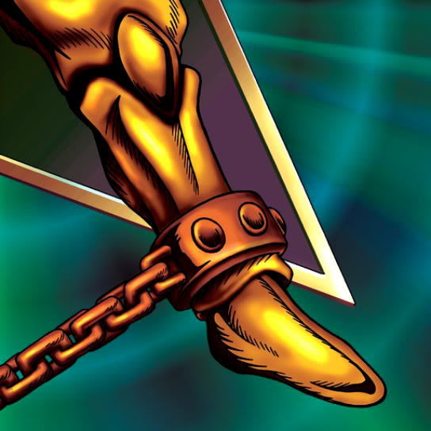

Left Leg of the Forbidden One

Description: "Awards victory to the one who brings together all four limbs and unleashes the monster."
STATS
ATK: 200
DEF: 300DECK COST
Deck Cost per Card: 10EFFECT NOT IMPLEMENTED
Fusion List (3 Possible Fusions)
- Left Leg of the Forbidden One + Baby Dragon = Blackland Fire Dragon
- Left Leg of the Forbidden One + Celtic Guardian = Dark Elf
- Left Leg of the Forbidden One + The 13th Grave = Magical Ghost